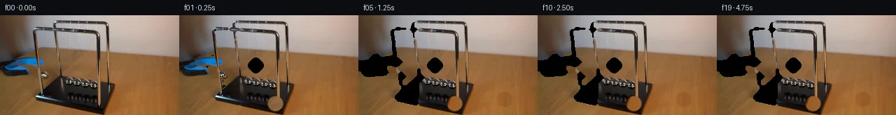

![首帧]()

Round 00
2026-11-06T09:13:56.313722+00:00像素候选变化代码 +431/−0inspection 更新
pixels 066eb292f7d1d983 · code 9a11f3cc51538829
查看本轮 generate.py 真实 diff
--- previous/generate.py +++ current/generate.py @@ -0,0 +1,431 @@ +#!/usr/bin/env python3 +"""Newton's Cradle Animation Generator. + +Reads first_frame.png (static locked-off shot of a Newton's cradle with +a blue-black grabber holding ball 1 at amplitude), then generates 20 frames +at 256×144, 4 fps, 5 seconds showing the release, swing, collision, and +subsequent oscillations. + +Method: Extract ball sprites via color+geometry masks, build inpainted +background plates, simulate pendulum physics with momentum transfer, and +composite sprites onto backgrounds per frame. +""" + +from pathlib import Path +import numpy as np +from PIL import Image, ImageDraw +from scipy.ndimage import binary_dilation, binary_erosion, binary_fill_holes, label, gaussian_filter +from artifact_io import save + + +# ── Configuration ────────────────────────────────────────────────────────── +CASE_DIR = Path(__file__).resolve().parent +H, W = 144, 256 +N_FRAMES = 20 +FPS = 4 + +# Ball geometry (measured from first_frame.png) +BALL_RADIUS = 10 # pixel radius of each ball +BALL_SPACING = 25 # center-to-center spacing of resting balls + +# Ball 1 (held at amplitude by grabber) +BALL1_HELD_CENTER = (109, 72) # (x, y) + +# Resting balls (2–5) — center positions +BALL_REST_Y = 128 +BALL2_REST_X = 163 +BALL3_REST_X = 188 +BALL4_REST_X = 213 +BALL5_REST_X = 238 +BALL1_REST_X = BALL2_REST_X - BALL_SPACING # 138 + +# Pendulum parameters +PIVOT_Y = 50 # y-coordinate of the pivot bar +PENDULUM_L = BALL_REST_Y - PIVOT_Y # string length ≈ 78 px + +# Gravity (px/s²) tuned so half‑swing ≈ 1.0 s (4 frames) +G = 4 * np.pi**2 * PENDULUM_L / (2.0**2) # ≈ 770 px/s² + +# Damping per half-cycle (energy retention) +DAMPING = 0.92 + + +# ── Helpers ───────────────────────────────────────────────────────────────── +def load_frame0(): + """Return frame 0 as uint8 (H,W,3) numpy array.""" + return np.array(Image.open(CASE_DIR / 'first_frame.png')) + + +def ball_mask_at(cx, cy, radius=BALL_RADIUS): + """Return a boolean (H,W) mask – circular disk at (cx, cy).""" + ys = np.arange(H)[:, None] + xs = np.arange(W)[None, :] + return (xs - cx)**2 + (ys - cy)**2 <= radius**2 + + +def extract_sprite(frame, cx, cy, radius=BALL_RADIUS, margin=2): + """Extract the ball at (cx,cy) from the frame as a sprite patch. + + Returns (sprite_rgba, bbox) where sprite_rgba is (h,w,4) with alpha, + and bbox is (x0,y0,x1,y1) in frame coordinates. + """ + r = radius + margin + x0 = max(0, int(cx) - r) + y0 = max(0, int(cy) - r) + x1 = min(W, int(cx) + r + 1) + y1 = min(H, int(cy) + r + 1) + + patch = frame[y0:y1, x0:x1].astype(np.float64) + hh, ww = patch.shape[:2] + + # Create alpha from distance + cy_local = cy - y0 + cx_local = cx - x0 + ys = np.arange(hh)[:, None] + xs = np.arange(ww)[None, :] + dist = np.sqrt((xs - cx_local)**2 + (ys - cy_local)**2) + alpha = np.clip(1.0 - (dist - radius) / margin, 0, 1) … diff truncated; 344 more lines …